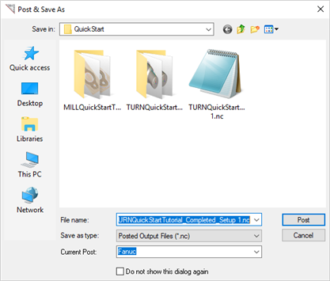

Once machining operations are created they can be post processed to a specific machine controller. To post process a machining operation, select the operation in the Machining Browser, right click and select Post.
There must be a Post defined for the Machining Job. 1.If no Post is defined, pick 2.Select the Turn Operation from the Machining Browser. 3.Right-click and select Post.
4.Enter a file name for the posted file and pick Post from the Post & Save As dialog box. 5.The posted file is displayed in Notepad.
|
You have the ability to select multiple Turn Operations or the entire set of machining operations and post process all of them with a single button click. To do this: There must be a Post defined for the Machining Job. 1.If no Post is defined, pick 2.Select the Setup from the Machining Browser. You can also select multiple operations by holding down the <Ctrl> key. 3.Right-click and select Post.
7.Enter a file name for the posted file and pick Post from the Post & Save As dialog box. 8.The posted file is displayed in Notepad.
|
Alternatively you can select the Machining Job at the root level under the Machining Browser, right click and select Post All. There must be a Post defined for the Machining Job. 1.If no Post is defined, pick 2.Select the Machining Job from the Machining Browser. 3.Right-click and select Post.
7.Enter a file name for the posted file and pick Post from the Post & Save As dialog box. 8.The posted file is displayed in Notepad.
|
Post-processing can be done from Program and Simulate tabs under the Machining Browser. Selecting Post will display the Post and Save As Dialog. The following are the default settings when the Post and Save As dialog box is displayed: •Post and Save As dialog points to the folder location where the part geometry is located. •Save as type – refers to post file extension. This information is obtained from the set post options dialog. •Current Post - refers to the controller/post processor to post process the toolpath. This information is also obtained from the set post options dialog. You can override the default settings under the Post & Save As dialog box. Once you click on the Post button in the dialog, post processing will begin and the posted file is located under the specified folder and then displayed in Notepad by default.  Enter a file name for the posted file and pick Post from the Post & Save As dialog box |